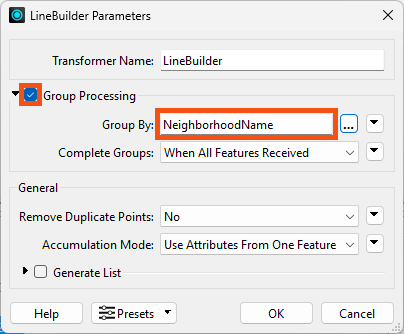

After completing this lesson, you'll be able to:
You can also use the LineBuilder to create polygons from points.
Open FME Workbench (2024.2 or later).
Click Blank Workspace to start a new workspace.
Click Readers > Add Reader and set Format to CSV (Comma-Separated Value).
Click the ellipsis button [...] and select the Neighborhoods.csv file.
Set the Coord. System to LL84.
You can decide how to generate points using the methods covered earlier in the course: reader parameters or a VertexCreator.
Add a LineBuilder transformer to the canvas connecting it to either the CSV reader or the VertexCreator, depending on the method you chose to get the points.
In the LineBuilder parameters, set Group Processing > Group By to NeighbourhoodName. If the last point is the same as the first, then a polygon is automatically created.

Run the workspace and inspect the results.
The output of polygons using any of the three methods and a LineBuilder transformer. Stylized in FME Data Inspector using map tiles by Stamen Design, under CC-BY-3.0. Data by OpenStreetMap, under CC-BY-SA.